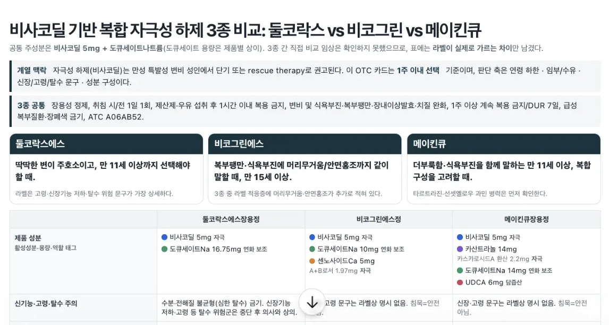

상담카드,
오늘 하나 만들어 봅니다
약사님, 이런 거 필요하지 않으세요?

설명은 나중입니다. 완성 카드를 먼저 띄워놓고 “저게 AI로 된다고요?”가 나오면 오늘 절반은 된 겁니다. 아직 방법을 설명하지 마세요.
카운터에서 시작합니다
성분이 비슷해서 더 어렵습니다
- 판콜·판피린·테라플루, 대부분 아세트아미노펜 기반 복합제
- 차이는 허가사항 깊숙이 숨어 있습니다
- 외워서 버티기엔 변형 제품이 너무 많습니다
카운터용 상담카드 한 장
- 공통은 위로, 표엔 차이만
- “이런 분껜 이 약” 한 줄씩
- A4 한 장 — 인쇄해서 카운터에
진입 멘트 — “저 카드가 태어난 자리로 가보겠습니다.” 캡처 1컷 — 세 제품이 나란히 놓인 매대나 상자 사진. 소재는 종합감기약 3종이지만 제품 이름만 바꾸면 어떤 매대든 똑같이 됩니다 — 마지막에 다시 말합니다.
그런데 이 친구, 거짓말을 합니다
성분 개수 = 효과 — 근거 없습니다.
아무 조건 없이 “종합감기약 셋 중 뭐가 제일 세요?”라고 물어 실제로 이런 답을 받아 캡처 1장을 준비하세요. 이 장면이 오늘 가장 오래 기억됩니다. 놀란 표정이 나오면 바로 다음 장으로.
사이언스가 찾고, 코워크가 검증해 만듭니다
진입 멘트 — “지어내게 두지 말고, 검증을 거치게 만듭니다.” 이 그림 하나만 기억하시면 됩니다 — 사이언스는 논문을 찾아서 검증하고, 코워크는 약학정보원 같은 공식 데이터로 그 결과를 한 번 더 검증한 뒤 카드를 만듭니다. 각 단계는 이어지는 장에서 하나씩 보여드립니다.
두 도구는 이런 물건입니다
클로드 사이언스
- 논문·문헌 전용 클로드 — 학술 데이터 창구가 내장돼 있습니다
- 성분·효능의 근거를 검색하고, 있는 논문인지 검증까지 합니다
- 검증을 거치니 지어낸 논문이 끼어들기 어렵습니다
클로드 코워크
- 일을 시켜놓는 클로드 — 끝까지 알아서 하고 파일로 가져옵니다
- 약학정보원·허가사항 원문으로 사이언스의 근거를 대조합니다
- 안 맞는 근거는 버리고 ⚠ 표시를 달아둡니다
여기서는 이름 두 개와 역할 분담만 기억하고 가시게 하세요. 요금제·설치 조건은 세션에서 다루지 않습니다 — 리허설에서 실측한 범위만 말하세요.
사이언스는 이렇게 부릅니다
② 클로르페니라민 — 감기 완화 RCT·졸음 주의 [DOI ✓ ×2]
③ 페닐에프린 — 경구 효과 불충분 논란(FDA 2023) [DOI ✓ ×2]
… 총 12편, 전부 DOI·PMID 실존 확인
세 제품 직접 비교 임상 — 없음
캡처 1컷 — 실측 보고서(판콜_판피린_테라플루_성분분석보고서.html)의 참고문헌 표 화면. 실측에서 “없음” 명시줄은 안 나왔으니 리허설 땐 “없으면 없다고 써” 마디를 넣고 재실행해 확인하세요. ③ 페닐에프린 논란은 09번 ⚠ 판단 장면의 실탄입니다.
코워크는 이렇게 만듭니다
✓ 근거 12건 중 11건 — 약학정보원 원문과 일치
⚠ 1건 — 원문에서 확인 안 됨 → 카드에서 빼고 표시
캡처 1컷 — 파일명이 보이는 생성 완료 화면. 카드 전체를 다시 크게 띄우지 마세요 — 02와 중복됩니다. 위 로그는 형태 예시입니다 — 실측 값으로 교체하되, ⚠가 0건이면 소재를 바꾸세요. 전부 통과한 화면은 “AI는 완벽하다”로 잘못 전달됩니다.
남은 건 ⚠ 하나 — 약사의 차례입니다
카드 문구를 한 줄씩 재검토.
→ 이러면 AI를 쓴 의미가 없습니다.
맞으면 살리고, 아니면 최종 제외.
→ 확인 끝, 도장.
캡처 1컷 — ⚠ 항목과 약학정보원 원문을 나란히 놓고 대조하는 화면. 실측 기준 ⚠ 후보 — 페닐에프린 경구 효능 논란(FDA 2023): 카드의 ‘코막힘’ 문구를 살릴지 뺄지, 약사가 정하는 장면으로 쓰기 좋습니다. 여기까지가 5장 그림의 ①→④ 한 바퀴 — “도장은 사람이 찍는다”를 말이 아니라 장면으로 남기세요.
다음부터는 구성만 남습니다
코워크에 넘기기 → 확정.
단계마다 사람이 넘겨줍니다.
사이언스 근거는 파일 첨부 한 번으로 넘기고,
약사에겐 ⚠ 확인만 남습니다.
여기서부터는 개념만 보여주고 실연하지 마세요. 그리고 과약속 금지 — 사이언스↔코워크는 자동 연동되지 않습니다. 자동이 되는 범위는 리허설에서 실측해서, 되는 것만 말하세요.
구성해두면 이렇게 돌아갑니다
캡처 1컷 — 카드가 쌓인 폴더 화면이면 충분합니다. 사이언스↔코워크는 자동 연동되지 않습니다 — 도구 사이는 사람이 파일로 잇는다고 그대로 말하세요. 한계를 숨기지 않는 게 오히려 신뢰가 됩니다. 구성 방법은 다음 장에서 네 걸음으로, 그다음 장에서 호출 한 줄까지만 보여줍니다.
구성은 네 걸음이면 됩니다
캡처 1컷 — 세 칸 폴더 구조 화면. 01~03은 전부 “한 번만”입니다 — 오늘 저녁 20분 투자로 구성이 끝난다는 걸 시간 표기로 보여주세요.
구성한 뒤엔, 부르는 말도 짧아집니다
✓ 지시문.md의 검증 규칙 그대로 적용
⚠ 1건 — 확인 요청 → 약사가 열어보고 도장
캡처 1컷 — 짧은 호출 한 줄과 카드함에 파일이 추가된 화면. 위 결과는 형태 예시입니다 — 실측으로 교체하고, 폴더 방식이 계정에서 안 되면 이 두 장(12–13)을 접고 11의 그림으로만 말하세요.
기능 추가는, 지시문 파일 추가입니다
├ 지시문_상담카드.md — 오늘 만든 것
├ 지시문_성분분석.md — 추가
├ 지시문_안내문.md — 추가
├ 근거함/
└ 카드함 · 분석함 · 안내문함
“지시문_성분분석, 유산균”
“지시문_안내문, 타이레놀”
마지막 장입니다 — 핵심 한 문장: “오늘 배우신 건 상담카드가 아니라, 일 시키는 구성입니다.” 여기서 QR을 띄워 지시문.md 전문을 나눠 드리세요 — 이 배포가 빠지면 청중은 집에서 실행할 수단이 없습니다. 이후 Q&A 9분(21–30분). 새 지시문도 만들 땐 오늘처럼 — 검증 규칙(차이만 · 우열 단정 금지 · 출처 · 확인 불가)을 넣고, 첫 결과물은 딴 창 검수를 거칩니다.